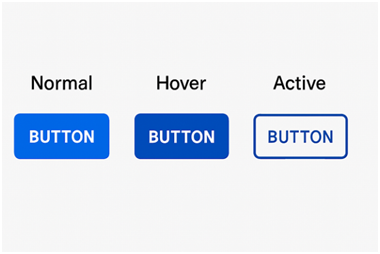

Teoría del color aplicada a la interfaz
- Usa paletas limitadas: 2–3 colores principales y 1–2 secundarios para mantener coherencia.
- Contraste para legibilidad: texto oscuro sobre fondo claro o viceversa.
- Colores funcionales:
- Verde → confirmar/éxito
- Rojo → error/alerta
- Azul → enlaces o acciones principales
- Tip: prueba tu diseño en modo oscuro y claro para asegurar consistencia.
Tipografía aplicada
- Fuente principal: Sans-serif (ej. Roboto, Open Sans) para claridad en pantallas.
- Jerarquía visual:
- Títulos → tamaño grande y peso fuerte
- Subtítulos → tamaño medio
- Texto → tamaño estándar, fácil de leer
- Regla práctica: máximo 2 tipografías distintas en todo el sistema.
- Espaciado: usa interlineado suficiente para evitar bloques densos.
Diseño de states en botones
Ejemplo de aplicación:
|
Estado |
Descripción |
Ejemplo visual |
|
Normal |
Botón en reposo, debe ser reconocible como clicable. |
Fondo azul, texto blanco |
|
Hover |
Cursor encima, indica disponibilidad. |
Azul más oscuro, sombra ligera |
|
Active |
Acción en curso (clic/tap). |
Azul intenso, borde marcado |
Tip rápido: usa animaciones sutiles (fade, cambio de color) para dar sensación de fluidez.

El gráfico con tres botones que muestran sus diferentes estados de interacción: Normal, Hover y Active.
- Normal → fondo azul vibrante, texto blanco.
- Hover → azul más oscuro con una sombra ligera para dar sensación de elevación.
- Active → azul intenso con borde marcado, transmitiendo la acción en curso.
Este tipo de representación práctica te ayuda a visualizar cómo se perciben los cambios de estado en una interfaz y cómo aportan claridad y retroalimentación al usuario.
Consistencia visual y guía de estilo
- Crea un sistema de diseño: define colores, tipografías, tamaños y espaciados en un documento compartido.
- Componentes reutilizables: botones, formularios, tarjetas → siempre con el mismo estilo.
- Iconografía: usa un set uniforme (ej. Material Icons).
- Checklist práctico:
- ¿Los botones mantienen el mismo tamaño y estilo?
- ¿Los títulos usan la misma tipografía y peso?
- ¿Los colores de alerta son consistentes en todas las pantallas?
Elementos clave de una Guía de Estilo
1. Identidad visual
- Paleta de colores:
- Definir colores primarios (identidad principal).
- Colores secundarios (apoyo, acentos).
- Colores de fondo y tipografía.
- Incluir códigos HEX/RGB para precisión.
- Tipografía:
- Fuente principal (para títulos).
- Fuente secundaria (para textos largos).
- Jerarquía tipográfica (H1, H2, párrafos).
- Tamaños y estilos (negrita, cursiva, espaciado).
2. Componentes UI
- Botones:
- Estados definidos: normal, hover, active, disabled.
- Forma, color y tipografía.
- Iconografía:
- Estilo (lineal, sólido, minimalista).
- Tamaños estándar.
- Uso coherente en todas las pantallas.
- Campos de texto y formularios:
- Bordes, colores de fondo, tipografía.
- Mensajes de error y validación.
3. Guías de composición
- Layout y grillas:
- Definir márgenes, padding y alineaciones.
- Uso de columnas o rejillas para organizar contenido.
- Jerarquía visual:
- Qué elementos deben destacarse primero.
- Uso de contraste y tamaño para guiar la atención.
- Espaciado y proporciones:
- Consistencia en la separación entre elementos.
4. Interacción y navegación
- Hipervínculos: estilo (color, subrayado, hover).
- Menús: estructura, comportamiento al desplegarse.
- Transiciones: tipo de animación (fade, slide, zoom).
- Feedback al usuario: mensajes de confirmación, alertas, estados de carga.
5. Ejemplos visuales
- Mockups de referencia (2–3 pantallas clave).
- Capturas de botones en sus distintos estados.
- Ejemplo de tipografía aplicada en títulos y párrafos.
Recomendaciones
- Mantener el documento en formato digital (PDF o presentación).
- Incluir capturas o ejemplos visuales de cada componente
- Lenguaje técnico.
En resumen: la guía de estilo debe ser clara, completa y visual, un manual que garantice que todo el sistema mantenga coherencia estética y funcional.
Ejemplo Plantilla de Guía de Estilo
|
Sección |
Elemento |
Definición / Ejemplo |
|
Identidad Visual |
Paleta de colores |
Primario: #0044CC (azul) |
|
Tipografía |
Títulos: Montserrat Bold 24pt |
|
|
Iconografía |
Estilo lineal, tamaño 24px, color primario. Ejemplo: ícono de “home” minimalista. |
|
|
Componentes UI |
Botones |
Normal: fondo azul, texto blanco |
|
Campos de texto |
Fondo blanco, borde gris claro, tipografía Open Sans 14pt. Placeholder en gris. |
|
|
Composición |
Layout / Grilla |
Sistema de 12 columnas, márgenes de 20px, padding interno de 10px. |
|
Jerarquía visual |
H1 destacado, H2 intermedio, párrafos secundarios. Botón principal siempre más visible. |
|
|
Interacción |
Hipervínculos |
Texto azul subrayado, hover con cambio de tono. |
|
Menús |
Barra superior fija, íconos alineados a la izquierda, menú desplegable con transición “fade”. |
|
|
Feedback |
Mensajes de error en rojo (#CC0000), confirmaciones en verde (#00AA44). |
|
|
Ejemplos Visuales |
Mockups |
Incluir 2–3 pantallas clave: menú principal, sección de contenido, pantalla de ayuda. |